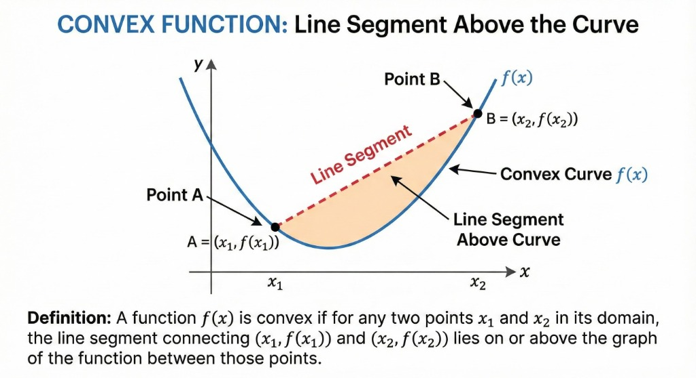

1. What is a Convex Function?
Mathematical Definition
A function \( f: \mathbb{R}^n \rightarrow \mathbb{R} \) is convex if \( \textbf{dom } f \) is a convex set and for all \( x, y \in \textbf{dom } f \) and \( 0 \leq \theta \leq 1 \):
\[ f(\theta x + (1 - \theta) y) \leq \theta f(x) + (1-\theta) f(y) \]Geometric Interpretation
The line segment joining points \( (x, f(x)) \) and \( (y, f(y)) \) lies above the graph of \( f \).
Terminology
- Strictly Convex: Inequality is strict for \( x \neq y, 0 < \theta < 1 \).
- Concave: \( -f \) is convex.
- Strictly Concave: \( -f \) is strictly convex.
Visual Definition
The line segment (chord) connecting any two points on the graph lies on or above the curve.
2. First Order Condition
Gradient Inequality
Suppose \( f \) is differentiable. Then \( f \) is convex if and only if \( \textbf{dom } f \) is convex and:
\[ f(y) \geq f(x) + \nabla f(x)^T (y - x) \]for all \( x, y \in \textbf{dom } f \).
Interpretation: The first-order Taylor approximation is a global underestimator of the function. The tangent plane always lies below the graph!
The tangent plane (first-order approximation) is always a global underestimator.
3. Second Order Condition
Hessian Condition
Assume \( f \) is twice differentiable. Then \( f \) is convex if and only if its Hessian is positive semidefinite:
\[ \nabla^2 f(x) \succeq 0 \]For 1D functions, this means \( f''(x) \geq 0 \) (positive curvature).
Positive definite Hessian implies positive curvature in all directions (bowl shape).
Example: Quadratic Function
Consider \( f(x) = \frac{1}{2} x^T P x + q^T x + r \).
The gradient is \( \nabla f(x) = Px + q \).
The Hessian is \( \nabla^2 f(x) = P \).
Conclusion: \( f \) is convex if and only if \( P \succeq 0 \).
⚠️ Important Note
The domain MUST be convex! Example: \( f(x) = 1/x^2 \) has \( f''(x) > 0 \) everywhere, but its domain \( \mathbb{R} \setminus \{0\} \) is not convex, so the function is not convex.
4. Famous Examples
Log-Sum-Exp
\[ f(x) = \log\left( \sum_{i=1}^n e^{x_i} \right) \]This is a smooth approximation of the max function. It is convex.
Log-Determinant
\[ f(X) = \log \det X, \quad X \succ 0 \]This function is concave on the set of positive definite matrices.
Norms
\[ f(x) = \|x\|_p \]Every norm is convex due to the triangle inequality.
Negative Entropy
\[ f(x) = x \log x \]Convex on \( \mathbb{R}_{++} \) (since \( f''(x) = 1/x > 0 \)).
5. Epigraph and Hypograph
Epigraph ("Above Graph")
The epigraph of a function \( f: \mathbb{R}^n \rightarrow \mathbb{R} \) is the set of points lying on or above its graph:
\[ \textbf{epi } f = \{ (x,t) \mid x \in \textbf{dom } f, f(x) \leq t \} \]Hypograph ("Below Graph")
The hypograph is the set of points lying on or below the graph:
\[ \textbf{hypo } f = \{ (x,t) \mid x \in \textbf{dom } f, t \leq f(x) \} \]Key Theorems
- A function is convex if and only if its epigraph is a convex set.
- A function is concave if and only if its hypograph is a convex set.
The epigraph is the shaded region above the curve.
6. Jensen's Inequality
The Inequality
For a convex function \( f \), the function value of the average is less than or equal to the average of the function values:
\[ f(\theta x + (1-\theta)y) \leq \theta f(x) + (1-\theta)f(y) \]General Form (Expectation):
\[ f(\mathbb{E}[x]) \leq \mathbb{E}[f(x)] \]Applications
-
AM-GM Inequality: \( \sqrt{ab} \leq \frac{a+b}{2} \)
Proof: Use \( f(x) = -\log x \) (convex) and \( \theta = 0.5 \).
-
Hölder's Inequality: Relates \( L_p \) norms.
Proof uses \( f(x) = -\log x \) with specific weights.
7. Operations Preserving Convexity
1. Non-Negative Weighted Sum
If \( f_1, \dots, f_m \) are convex and \( w_i \geq 0 \), then \( f = \sum w_i f_i \) is convex.
2. Composition with Affine Map
If \( f \) is convex, then \( g(x) = f(Ax + b) \) is convex.
3. Pointwise Maximum
If \( f_1, f_2 \) are convex, then \( f(x) = \max\{ f_1(x), f_2(x) \} \) is convex.
Example: The max of affine functions \( \max_i (a_i^T x + b_i) \) is convex.
4. Composition Rules
For \( f(x) = h(g(x)) \):
- \( f \) is convex if \( h \) is convex & non-decreasing, and \( g \) is convex.
- \( f \) is convex if \( h \) is convex & non-increasing, and \( g \) is concave.
8. Advanced Example: Geometric Mean
Theorem: Geometric Mean is Concave
The function \( f(x) = (\prod_{i=1}^n x_i)^{1/n} \) is concave on \( \mathbb{R}_{++}^n \).
Proof Sketch:
Consider the Hessian \( \nabla^2 f(x) \). After some derivation, we find:
\[ v^T \nabla^2 f(x) v = -\frac{\prod x_i^{1/n}}{n^2} \left( n \sum \frac{v_i^2}{x_i^2} - (\sum \frac{v_i}{x_i})^2 \right) \]By the Cauchy-Schwarz inequality (with vectors \( \mathbf{1} \) and \( v_i/x_i \)), the term in the parentheses is non-negative.
Thus, \( v^T \nabla^2 f(x) v \leq 0 \), so the Hessian is negative semidefinite. Therefore, \( f \) is concave. \(\blacksquare\)
9. Extended Value Extensions
To handle domains implicitly, we define the extended value extension \( \tilde{f} \):
\[ \tilde{f}(x) = \begin{cases} f(x) & x \in \textbf{dom } f \\ \infty & x \notin \textbf{dom } f \end{cases} \]Indicator Function
For a set \( C \), the indicator function \( I_C(x) \) is 0 if \( x \in C \) and \( \infty \) otherwise.
Fact: A set \( C \) is convex if and only if its indicator function \( I_C \) is convex.